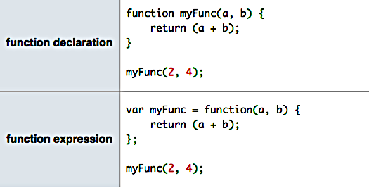

Functions
Unit Overview
- Computer Programming Concepts
- Writing and Executing Functions
- Inputs and Outputs from Functions
- Scope
Computer Programming: Key Concepts
One of the most magnificent structures in the computer science world is the function.
Functions (sometimes called procedures) are mini-programs that you can use over and over inside of your bigger program.
Functions are pieces of code that you can call over and over again.
Real Life Example
- Consider song lyrics, when there is a chorus that repeats throughout the song.
- What is a more efficient way of writing the song lyrics?
- Click here to refactor this song!
- Hint: Try highlighting the lines that repeat. After the first chorus, replace the remaining choruses with the word "CHORUS" instead.
Functions
- Efficiency
- Timely identification and correction of bugs in the code.
- Able to use the code in other projects easily.
- Use a language to express a solution to a problem.
Functions and JavaScript
Functions are at the heart of JavaScript. They let you write code that you can quickly use again and again.
Remember! Our song exercise at the beginning of class? The chorus acts like a function that you can call over and over when you want the singer to sing those lyrics. What are some real life functions?
- Coffee shop example
- Sending a text message
- Driving to the store
Unit Overview
- Computer Programming Concepts
- Writing and Executing Functions
- Inputs and Outputs from Functions
- Scope
Let's talk about syntax
The following is how you declare a function:
function functionName() {
//code you want to repeat
}
Name a function like you name a variable. Best practices:
- The name gives context/sense and references the function's purpose. Examples: makeLunch, canVote, getTea.
- Notice that camel case is used: camelCase.
Function names cannot start with a number.
Everything within the curly braces is the code block.
Running a Function
The code in the code block only runs when the function is activated. How do we run the code block in myGreeting?
function myGreeting() {
alert("Good morning!");
}
To activate our code block, we need to call the function housing the code block. You call the function like so:
myGreeting();
The parentheses () are what actually call the myGreeting function. Parentheses () are very important!
Function
In summary, functions are re-usable collections of statements.
First, declare the function:
function sayMyName() {
console.log('Hi Jessica!');
}
Then call it (as many times as you want):
sayMyName();
Example in JS Bin or Console
//Create your function first
function alertRandom() {
//create a new random number each time the function is run
let randomNumber = Math.floor(Math.random()*6)+1;
alert(randomNumber);
}
//calling the function
alertRandom();
Calling a function more than once:
function alertRandom() {
let randomNumber = Math.floor(Math.random()*6)+1;
alert(randomNumber);
}
alertRandom();
alertRandom();
alertRandom();
alertRandom();
Variables and Functions
var alertRandom = function() {
let randomNumber = Math.floor(Math.random()*6)+1;
alert(randomNumber);
};
- This is an anonymous function and will run as part of the variable.
- Notice we declare a variable, and assign a function to its value.
- We end this statement with a semi-colon.
- How would we call this function?
Function Expressions and Declarations
Review
Which of the following describes a function?
- A function means the same things as a JavaScript program.
- A function lets you store a block of code that you can use over and over again.
- A function is used to add decision-making to your program.
- A function is used to hold similar pieces of information, like a database.
Review
Which of the following code snippets correctly shows how to create a function named sayHello which opens an alert dialog with the string "Hello" in it?
function sayHello {
alert("Hello");
}
function sayHello (
alert("Hello");
)
function sayHello() {
alert("Hello");
}
var function=sayHello() {
alert("Hello");
}
Coding Conventions: Spacing
- Use new lines between statements.
- Use spaces to show blocks.
Bad:
function addNumbers() {return num1 + num2;}
Good:
function addNumbers() {
return num1 + num2;
}
Functions change the flow
Up until this point, our programs have been running from top to bottom in HTML and CSS.
Functions allow the browser interpreter to store information to be sure that proper code is being called depending on the contents of the function.
Many developers write their functions at the beginning of their code, so all of them are grouped together.
Unit Overview
- Computer Programming Concepts
- Writing and Executing Functions
- Inputs and Outputs from Functions
- Scope
Getting information from a function
Functions don't just run JavaScript statements. They can also return values that you can use elsewhere in a program.
Functions can also give something back when they finish. This is called returning a value.
function goToCoffeeShop() {
return "Espresso is on the way";
}
The value that is returned by the function can then be used in your program.
Getting information from a function
‘return’ing something in JavaScript is very useful
You can use its values for many other parts of your program. Examples: display items on your website, do calculations, etc.
Return statements should be the last thing in the code block of a function, because they immediately exit the function.
Return Values
The return keyword returns a value to whoever calls the function (and exits the function):
function addNumbers() {
var num1 = prompt("What is your favorite number?");
var num2 = prompt("What is your second favorite number?");
let result = Number(num1) + Number(num2);
return result; // Anything after this line won't be executed
}
var sum = addNumbers();
Review
After the code below runs, what value is stored in the variable dayOfWeek?
function getDay() {
return "Monday";
alert("Calculating day");
return "Friday";
}
var dayOfWeek = getDay();
Washing Machine
What is the return value of running a load of laundry?
How is this different from using console.log()?
Create in JS Bin or Console
1. Create a function named getYear.
2. Inside the function's code block add this line of code:
var year = new Date().getFullYear();
This creates a new variable and stores the current year in it.
3. Add a statement that returns the variable.
4. Call the getYear function & store the returned value in a new variable named yearToday.

Sending information to a function
You can give information to a function to change how it works.
Coffee shop example
JavaScript functions can also accept information called an argument, which you send to the function.
The argument is stored in a variable called a parameter that you can use inside the function.
function myFunction(parameter) {
//code block
}
Parameters are variables.
Parameters and arguments
Passing an argument to a function
function goToTheCoffeeShop(drink) {
alert(drink + " is on the way!");
}
goToTheCoffeeShop("Espresso");
You can pass different values and get different results!
You can also have multiple arguments in a function. More on that very soon!
Visual!
Multiple Arguments
In our example, let’s say I also want something to eat.
function goToTheCoffeeShop(drink, pastry) {
alert(drink + "and " + pastry + " are on the way!");
}
goToTheCoffeeShop("Espresso", "scone");
You can pass different values and get different results!
You can also have multiple arguments in a function.
You want to add no more than 4 or 5 arguments to a function. This can get tedious.
Exercise
In JS Bin, let’s create a function to calculate the area of a rectangle.
- area = width * height
- How many variables will we need?
- How many parameters?
Arguments Review
Functions can accept any number of named arguments:
function sayMyName(name) {
console.log('Hi, ' + name);
}
sayMyName('Claire');
sayMyName('Testy McTesterFace');
function addNumbers(num1, num2) {
let result = num1 + num2;
console.log(result);
}
addNumbers(7, 21);
addNumbers(3, 10);
You can also pass variables:
var number = 10;
addNumbers(number, 2);
addNumbers(number, 4);
Fun with Functions
var nameImprover = function(name, adj) {
return 'Col ' + name + ' Mc' + adj + ' pants';
};
- How would we run this function?
- How can we see the result in the console?
- How many arguments does this function take in?
Return vs Console.log()
var nameImprover = function(name, adj) {
return 'Col ' + name + ' Mc' + adj + ' pants';
};
var nameLogger = function(name, adj) {
let newName = 'Col ' + name + ' Mc' + adj + ' pants';
console.log(newName);
};
Read here for more on the return keyword
Read here for more on the console.log() method
Note on console.log()
var addTwo = function(a, b) {
console.log(a,b); // logs 3,10
return a + b;
};
addTwo(3, 10); // 13
Why would a developer use the console.log() method in the addTwo function in the development phase?
Why would a developer remove the console.log() method in the addTwo function for the production phase?
JavaScript can handle it!
JavaScript can handle multiple functions.
Each function acts like its own individual universe.
The variables created in one universe do not interact with the variables created in another universe or another function.
This means that functions are a wonderful tool to use when coding with security in mind.
Unit Overview
- Computer Programming Concepts
- Writing and Executing Functions
- Inputs and Outputs from Functions
- Scope
Scope
Variable Scope
function greeting() {
let person= "Lilah";
alert(person);
}
var person = "George";
greeting();
alert(person);

GLobal vs Local
function greeting() {
let person = "Lilah";
alert(person);
}
var person = "George"
greeting();
alert(person);
GLobal vs Local
LOCAL: A variable declared in a function only lives inside that function and cannot be accessed or changed outside of that function and has therefore local scope.
GLOBAL: Any variables you create in a script that are not contained in a function are in this bigger universe called the global scope.
**All functions can access the global scope.
The word “scope” refers to where a variable is declared.
More on Variables
As you create more complex programs, you'll end up adding multiple functions to your scripts.
It's possible, even likely, that a function defines and uses the same name as a variable used elsewhere in your script.
Area Example:
You might write some JavaScript with a variable named “width”, but also have a function named computeArea that also has a width variable inside it. More on this later.
var width = 6;
var computeArea = function(width) {
return width * width;
};
Things to remember
1. You can use the var keyword to declare variables outside of functions. These global variables can be used by other functions and variables.
2. You can use the let keyword to declare variables inside of functions. These local variables are block scoped.
3. You can use the const keyword to declare variables whose values cannot be reassigned. These will often be global variables.
Variable Scope
A variable with "local" scope:
function addNumbers(num1, num2) {
let localResult = num1 + num2;
console.log("The local result is: " + localResult);
}
addNumbers(5, 7);
console.log(localResult);
Variable Scope
A variable with "global" scope:
var globalResult;
function addNumbers(num1, num2) {
globalResult = num1 + num2;
console.log("The global result is: " + globalResult);
}
addNumbers(5, 7);
console.log(globalResult);
How does your browser read your JS code?
- The JavaScript engine takes two passes through the code.
- First: figure out and store the variable/function scopes.
- Second: execute the code.
Fortune Teller Exercise
Why pay a fortune teller when you can just program one yourself?
- Write a function named
tellFortunethat: - Outputs someone's fortune to the screen like so: "You will be a [job] in [city], and married to [partner's name] with [number] kids."
- Call that function 3 times with 3 different values for the arguments.
Age Calculator Exercise
Calculate Your Age!
- Write a function named
calculateAgethat: - Takes 2 arguments: birth year, current year.
- Calculates the 2 possible ages based on those years.
- Outputs the result to the screen like so: "You are either NN or NN years old."
- Call the function three times with different sets of values.
- Bonus: Figure out how to get the current year in JavaScript instead of passing it in as an argument.
Review
var divideByThree = function(number) {
let val = number / 3;
console.log(val);
};
How would you call this function so that 3 is logged to the console?
Review
var greeting = function(name) {
console.log("Great to see you," + " " + name + "!");
};
How would you call this function so that “Great to see you, Grace Hopper!” is logged to the console?
Review
var foodDemand = function(food) {
console.log("I want to eat" + " " + food + ".");
};
How would you call this function so that “I want to eat Chinese food.” is logged to the console?
Review
var coffeeCost = function(cost) {
let total = cost * 5;
console.log(total);
}
Jessica drinks five cups of coffee a day. How would you call this function if the cost of her coffee is $3?
Review
Given the code below, what appears in the alert dialogue when this program runs?
var name = "Wonder Woman";
function setName() {
let name = "Diana Prince";
}
setName();
alert(name);
Reading Assignment
Please read Chapter 3
(no need to worry about pages 106-117)

Unit Overview
- Computer Programming Concepts
- Writing and Executing Functions
- Inputs and Outputs from Functions
- Scope
THE END
Thank you for your attention!